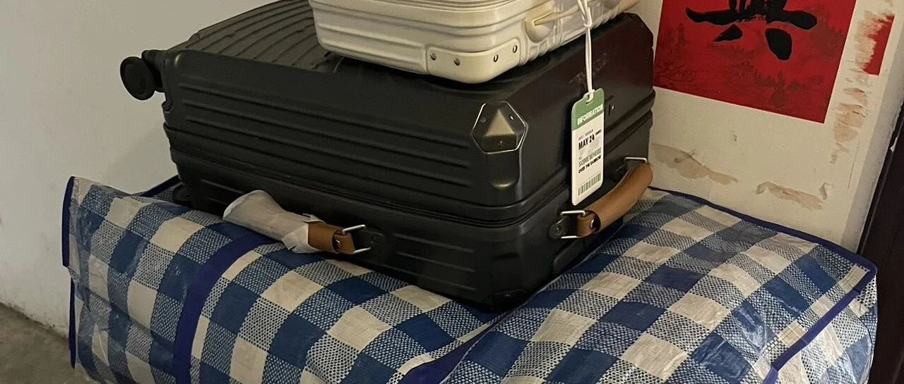

2018-2025，29岁的我决定告别北京
点击关注 秋秋在分享
一起实现财务自由退休
大家好，我是秋秋呀！
北漂结束，东西都收拾好了。


住了7年的北京，最后留下的是15个包裹。
打包好所有的行李，我俩静静坐着。
最后一次看看北京，睡在我们的小"家"，在空落落的房间，我好像又回到了刚来到北京的那一天。
2018年的夏天，22岁的我大学毕业了。
那时候，真的对未来充满好奇。

来北京三个月，住的近吃的好就是我生活的主题了。


我很喜欢拍照，经常去北京各个公园大学打卡。
当然还有每天早上六七点到公司，上下班前后时间疯狂充电！就这样工作了两年。

2020年，24岁的我裸辞了。
手帐 书桌 拍摄 数码 ，没想到慢慢就成为我最赚钱的事业了。
做博主的时光也很快乐。
当时十天左右抖音就有一万粉丝，一个月就5万粉。
公众号小红书快手QQ微信群，我都没落下！一个人会累，有了之前的积淀却觉得很幸福。


和大家一起研究数码文具，自我提升也很有成就感！
这样做下去，我有了自己的公司，也开始尝试复利，把大多数钱存下来，准备Fire。
2022年，26岁的我，选择提前退休了。

退休后我尝试的事情很多。
成功fire的第三年，2025年的夏天，我决定，在北京的一切都结束了！
我要去看更大的世界了。
北京给了我梦想的起航，给了我金钱眼界，我很喜欢那个时期的自己。
却更加清楚未来的自己不应该再在舒适区里滑行了。
今天的我是这样的～
骑行了60多公里，已经离开北京啦！